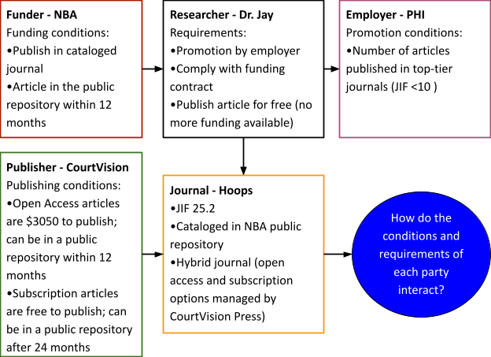

How do institutional, funder, and publisher policies affect
authoring choices?
How can open science values reshape scholarly publishing?
Objectives
Explain how to get an article published in a traditional scholarly
publication.
Locate publications that have integrated open science processes into
their publishing workflow.
Discuss how open science values can affect the collaboration process
of writing a scholarly article.
Overview of Scholarly Publishing
Researchers in all disciplines are often told to “publish or perish”,
meaning that they must write articles about their research and get them
printed in acceptable publications or risk losing out on opportunities.
If you think this instruction to “publish” is vague, then you’re on the
right track. What does it mean to publish or be published? What is an
“acceptable” publication? That usually depends on the POV of three
groups (1) research/academic institutions (2) funders (3)
publishers.
Fortunately, there is always a great xckd comic for everything, and
even better contextual information on the explain xkcd wiki.
Discussion
Let’s look at the below comics and the explanations together and then
discuss.
Comic showing the growth of scientific
publications over time and how much of it is open access.
(Source: The
Rise of Open Access)
Comic about how scientists use arXiv to share
research quickly, sometimes before peer review.
(Source: arXiv)
Comic highlighting the challenges and quirks of
the peer review process.
(Source: Peer
Review)
Discussion
OPTIONAL Exercise: Jargon Busting
This exercise is an opportunity to gain a firmer grasp on the
concepts around scholarly publishing and open science.
Form groups of four to six and choose a note-taker.
Talk for three minutes (your instructor will be timing you!) on any
terms, phrases, or ideas around publishing or open science that you’ve
come across and perhaps feel you should know better.
Make a list of all the problematic terms, phrases, and ideas. Note
if more than one person finds a term problematic.
Identify common problematic words as a starting point - spend 10
minutes working together to try to explain what the terms, phrases, or
ideas on your list mean. Note: use both each other and the internet as a
resource.
Identify the terms your groups were able to explain as well as those
you are still struggling with.
Each group then reports back on one issue resolved by their group
and one issue not resolved by their group.
The instructor will collate these on a whiteboard or shared document
and facilitate a discussion about what we will cover today and where you
can go for help on those things we won’t cover. Any jargon or terms that
will not be covered specifically are good notes.
Case Studies
Case Study 1: Conflicting Policies
Dr. Jay received funding from the National Beneficiary
Advancement Agency (NBA) for their project. Dr. Jay’s employer,
Pinehurst Hall Institute (PHI), grants promotions based
on the number of articles in “top tier” journals (with an impact factor
>10).
The NBA requires all articles resulting from funding to be:
Published in a journal in their catalog, and
Publicly available in their repository no later than 12
months after publication.
Dr. Jay found The Journal of Hoops and Performance (Hoops),
published by CourtVision Press, which meets PHI’s
standards and is listed in the NBA’s catalog.
Upon submission, Dr. Jay discovers that Hoops is a
hybrid journalthat publishes some articles behind a
subscription paywall, and others are made public or ‘open access’ if
authors pay $3,050.
Dr. Jay has no more funding from the NBA or PHI, so opts to publish
the article in the non-open access portion of Hoops.
However, after acceptance, CourtVision Press notifies Dr. Jay that
the article cannot be deposited in the NBA’s repository until 24
months after publication, violating the NBA’s 12-month
rule.
As a result, Dr. Jay must pause their research project to negotiate
with the publisher and the NBA, or find a different journal
altogether.

Diagram illustrating the conflicting
requirements faced by Dr. Jay: institutional promotion criteria, funder
open access policy, and publisher embargo limits.
From this example, we can see that Dr. Jay is trying to meet the
requirements of multiple groups with different values. Their employer
wants to show their stakeholders high productivity and impact. The
funder wants to comply with federal mandates. The publisher wants to
maintain control over dissemination.
Case Study 2: Aligned Incentives
Dr. Ripken received funding from the Municipal Leadership and Bridges
Program (MLB) for their project. Dr. Ripken’s employer, Biogen Advanced
Labs (BAL), has signaled that recognition will be awarded to projects
that show commitment to Open Science. The MLB requires all peer-reviewed
articles to have:
persistent identifiers (PIDs) to be included in acknowledgments
and/or funding statements, and
a plan for posting publicly within 12 months of publication.
Dr. Ripken has found Diamond Press Publishing, whose catalog of
journals have a platform that allow them to share all iterations of the
research project: study protocols, preprints, datasets, peer review
history and final article. Dr. Ripken has to pay fees to ensure all of
these outputs are open, but is happy to discover that their BAL has a
partnership with Diamond Press Publishing that offsets some of the
costs, and the rest are covered in the original contract with the
MLB.
Case Study 3: No Open Science Incentives
Dr. Brown is working with Drs. O’Connell and Carpenter all employed
by the Center for Life Sciences and Virology (CLV). They received
internal funding for their research project. The CLV only requires a
list of publications as a result of the funding and has no public access
or open science policies, and has not included funding for publication
in the contract. Dr. Brown tells their team that they should publish in
Gridiron Journal because they know the editor-in-chief. Gridiron Journal
is ‘hybrid’, meaning that Drs. Brown, O’Connell, and Carpenter can:
pay $1075 to make their article publicly available, or
pay nothing and it can only be accessed by readers with a
subscription.
They decide to go with option 2.
Discussion
How could Dr. Jay have avoided the situation during the project
planning / funding request stage?
What if Dr. Ripken discovered the publisher’s fees were over budget?
What would his first strategy be?
Should Dr. Brown’s research team explore other publishing options?
Why do you think they chose the path in the case study?
Choosing a Publication Venue
Since so many journals are shifting to open access models, it’s
important to ensure the journal is still a fit for all your research
needs.
Second, if you have received funding for the research for which
you’re writing an article, you want to check the agreements for
publishing requirements. Also check your affiliated institution’s
requirements for publishing. And third, check the editorial and access
policies for the journal you want to submit to. These three parties need
to work together to successfully publish your article.
If there are no external requirements for where to publish, it’s
important to understand how a journal or its publisher values open
access and open science. For example, if a journal does not have a
policy on making publishable data available with the manuscript.
Choosing a publication based on impact factors or citation data is not
getting the full picture. Journal impact factors were originally
designed to help libraries purchase journals, and have subsequently been
used to choose where to publish and to evaluate individual researcher’s
impact on their profession: https://jamanetwork.com/journals/jama/article-abstract/202114
The writing and submission process
How authors write and submit the manuscript depends on where they’ve
chosen to publish.
Understanding the difference between traditional and open science
publishing is important here.
Researchers → Preprints → Community Feedback → Submission → Open
Peer Review → Open Access Publication
While some journals still operate under the ‘traditional’ model, many
are moving to open access or ‘hybrid’ states where researchers get to
choose. It’s important for researchers to collaborate early and often on
how their work will be made available.
Placeholder for publication workflow
diagrams
Challenge
Exercise: Quiz – Traditional vs. Open Science
Publishing
T/F: Authors can post their article online before submitting to a
peer-reviewed journal
T/F: Authors should choose where to publish their articles based on
Journal Impact Factors
T/F: Authors should submit articles by emailing the editorial
board
T/F: Authors should consult colleagues, library staff, and other
available resources when choosing where to publish their article
T/F: All scholarly publications are committed to open science
F, must check journal’s preprint policy
F, JIFs were originally meant to help libraries decide what journals
to purchase, not where authors should publish
F, always check the journal’s policies and processes before
submitting
T, don’t rely on one source, check them all!
F, Not all, some!
Discussion
Evaluate Journals for Open Science
Processes
Form 3 groups and decide who will be the notetaker and who will share
with the larger group. Each group is assigned 1 journal to review:
Take 10 minutes and at the websites for these three journals and note
how they integrate open science into their editorial and publishing
processes. Use the below list to guide your notes:
How are articles made available to readers?
Are there any fees associated with publishing?
What is the peer review policy?
Does the journal support linking to other research outputs?
After 10 minutes, each group will share 1 thing that they learned and
1 thing that was difficult.
Key Points
Understand the institutional, funder, and publisher influences on
publishing choices
Assess publication venues critically for openness and
accessibility
Open science values can be embedded in authoring, publishing, and
reviewing choices
What open authoring tools are available for writing scholarly
articles?
How can I create manuscripts using Markdown, LaTeX, or
RMarkdown?
How can open documents be converted to publisher-required formats
like DOCX or PDF?
Objectives
Describe collaborative, open authoring tools that can be used to
write scholarly articles.
Locate templates in Markdown and LaTeX that can be used to write a
scholarly article.
Understand what tools can convert open document formats to
proprietary ones required by scholarly publications.
There are many collaborative authoring tools available today; DOC,
DOCX, and PDF are the file formats most requested by scholarly
publishers. The trouble with these formats is that they are not open
source. So how do we work within the confines of the scholarly
publishing landscape while still adhering to our open science values? By
finding other ways to author manuscripts, of course! https://alternativeto.net/
Apache OpenOffice: free and open source, though not
regularly updated.
Most journals have manuscript templates in DOCX format, which can be
opened using these programs.
These programs allow you to collaborate, show version history, and
publish documents easily. However, these programs do not easily create
semantic, machine-readable documents. To produce manuscripts,
documentation, or other narrative research outputs that can be Findable,
accessible, interoperable, and reproducible it may be time to transition
to a what-you-see-is-what-you-mean (WYSIWYM) document editor.
That is, a document editor that focuses on the structure rather than the
format.
WYSIWYM Tools
For semantic authoring, consider
What-You-See-Is-What-You-Mean (WYSIWYM) formats such as:
Markdown
What’s different? Plain text editor with semantic commands for
visuals.
You can use any text editor to create a markdown file, change the
extension from .txt to .md. hackmd.io However, there is a new syntax you
have to learn to do things like creating headings, links, bold, italic,
lists, etc. It’s easier to learn those things using a tutorial or an
online web editor.
Let’s try the 10 minute Commonmark tutorial together:
Complete as many of the exercises as you can in 10 minutes. Try
to explore:
Headings
Lists
Links
Code blocks
Now you can create a markdown file, but how do you get it to the
publisher? We already know that most of them will only take DOCX or PDF
files. While out of scope of this lesson, there are many tutorials and
open source software for converting Markdown into other formats that
publishers may accept:
RMarkdown is markdown that integrates with R to create the formats
required by a publisher. If you’re already using R in your work, this
integration would be the best for keeping your project files together.
Tutorials on using RMarkdown are available through data carpentry:
What’s different? Instructions to the ‘compiler’ on what each section
should be, the .TEX file is not the product, the PDF that is produced
is. Lesson 2 of Learn
LaTeX explains how LaTeX works by combining multiple tools, rather
than functioning as a single application. Unlike many computer programs,
LaTeX is not a single application containing ‘everything’ in one.
Instead, there are separate programs that work together. We can divide
those up into two things you actually need:
If most publishers only accept proprietary formats like DOCX and PDF
files, how do you use open source or alternative authoring tools to
submit to publishers?
There are options:
Most WYSIWYG editors allow export to DOCX or PDF.
Caveat: These may not be digitally accessible or
semantically rich.
Depending on the language you use to author your document, you
may be able to use open source programs like PANDOC to transform your
file into one of the required file formats.
Some publishers may accept open source formats like LaTeX or
Markdown.
Many publishers will ask for your LaTeX files for final formatting
if your article is accepted, but they will have their own requirements
for the structure
Publishers are starting to use their own online collaborative
authoring platforms that use Markdown and LaTeX
Or is the title “author” reserved only for those who put “pen to
paper”?
Does open science take a different view of authorship?
Objectives
Understand author and contributor roles.
Determine appropriate roles for given contributions.
Explain common conflicts of interest and how to mitigate them.
The idea of authorship and who should be listed as an author has
changed over time with the open science movement bringing more emphasis
to “team science” and a broader definition of authorship.
Authorship in the Open Science Era
What does it mean to author a paper? Is it just writing, or does it
include data curation, software development, and conceptualization? Open
science emphasizes transparency and inclusivity, broadening the
definition of authorship to include many kinds of contributions.
Oxford Languages defines author as “a writer of a book, article, or
report” and while this is correct it is also extremely limiting and
doesn’t take into account the reality of how research outputs are
constructed in the 21st century. Today research is done generally in a
large team, and everyone should get credit for the work that they do.
This means that authoring a paper can include roles that did not exist
50 years ago. A broader definition that takes into account current
research practices is authorship is the work that goes into writing,
editing and otherwise preparing a research output for publication
including data curation and management, developing the methods or
software that is used in the research and administrative tasks such as
supervision, procuring grants or other funding and even conceptualizing
the research questions. None of these roles are necessarily new, and in
fact many publishers have had ways of capturing this work for many
years, but they have taken on greater importance in the era of
transparent and inclusive open science.
CRediT - Contributor Roles Taxonomy
In 2015, NISO released the “contributors role taxonomy” also known as
CRediT as a way to standardize and make machine readable the terms being
used by publishers when capturing authorship roles. These 14 roles are a
broad collection of the most common labor that contributes to research
and research outputs.
Role
Description
Conceptualization
Ideas; formulation or evolution of overarching research goals and
aims.
Data curation
Management activities to annotate (produce metadata), scrub data and
maintain research data.
Formal analysis
Application of statistical, mathematical, computational
techniques.
Funding acquisition
Acquisition of financial support.
Investigation
Conducting a research and investigation process.
Methodology
Development or design of methodology; creation of models.
Project administration
Management and coordination responsibility for the research activity
planning and execution.
Resources
Provision of study materials, reagents, patients, materials,
computing resources.
CRediT is not the only way to define authorship at a role level.
Other definitions like the ICMJE’s
authorship guidelines, define authorship for their journals.
Typically a journal’s instructions to authors will cover authorship
guidelines.
Discussion
Self-Reflection on Past Roles
Describe the roles you have taken in prior publications. Can you map
them to CRediT roles? Were there times you should have received
authorship credit but did not?
Discussion
Role Assignment Case Study
Given a fictional research team and their contributions (provided by
instructor), assign each team member one or more CRediT roles. Discuss
whether they should be listed as authors.
Conflict of Interest
Conflict of interest (COI) in scholarly communication can be found at
many different levels; for an author, an editor, or a peer reviewer.
This guide will focus on COI and authorship. Broadly COI is defined as
“any real or perceived influential factor that may influence, bias, or
affect the motivations of a researcher, thereby affecting their
research’s integrity.” For authors it can take the shape as an outside
relationship (financial or otherwise) with an industry sponsor or a
close-personal relationship with a peer-reviewer.
Transparent disclosure is key to maintaining research integrity.
Challenge
COI Quiz
Mark each statement as True (T) or False (F):
Financial COIs are the only ones that need to be disclosed.
COIs can exist even if the influence is only perceived, not
real.
Authors should disclose close collaborations or personal
relationships relevant to their work.
Journals often have different requirements for COI disclosure.
Answers: F, T, T, T
Key Points
Authorship in open science includes more than writing; it
encompasses many research roles.
The CRediT taxonomy provides a transparent way to attribute
contributions.
Conflicts of interest can bias research and must be disclosed to
maintain trust.
Open science encourages structured authorship and transparency in
conflicts.
What are the benefits and challenges of open peer review?
How can I respond to critiques of open peer review?
Objectives
Understand the open peer review (OPR) process.
Explain the benefits of OPR over traditional peer review.
Construct an argument for OPR when faced with common
objections.
Open Peer Review (OPR) or open review is one way the Open Science
principles of transparency, collegiality and inclusivity have been made
real. In OPR reviewers name, and/or their reports are made available to
the public. In some cases OPR means that articles can be commented on by
the public in a form of open review.
A (very) brief history of Open Peer Review
Open peer review has a long history; in fact the commentaries or
letters written between authors in the early Enlightenment can be
considered a peer review of sorts and since they were signed they were
“open”. <> The 20th century saw a consolidation of
review types into the formal anonymous review that many, if not most
journals still use today. With the evolution of the Open Science
movement in the late 1990s and early 2000s, peer review was identified
as one place science and research could improve and become more
transparent. The first adoptions of open review practices were launched
in 1999 by Journal of Medical Internet Research. Since that time
publishers and journal editors have …making more articles subject to or
available for open peer review processes. More information on the
history of Open Peer Review can be found at: Wikipedia, https://doi.org/10.1038/6295, and https://doi.org/10.12688/f1000research.11369.2.
Types of Open Peer Review
Open Identities - The removal of anonymity from reviewers, and/or
authors in the review process. The reviewer identity can be known to
just the authors and editors or published in the research article.
Open Reports - Reviewer reports, and author responses are published
alongside the article. These reviews and responses become part of the
scholarly record, but reviewers may still be anonymous. This process
does not mean that all of the reviewer suggestions are incorporated into
the article. This method is sometimes called “Published Peer Review
History.”
Open Participation - Reviews and comments can be made by readers at
any point after publication of an article. Some articles have been
reviewed before publication and others might use open commenting as
their review process. https://doi.org/10.12688/f1000research.12037.3
Type
Who Is It Open To?
What Happens?
Open Identities
Reviewers and Authors
Reviewer names are known to authors or publicly listed.
Open Reports
Reviewers, Authors, Public
Reports are published with the article, authors may or may not
accept all suggestions.
Open Participation
Reviewers, authors, the public
The public can review and annotate articles, post-publication.
Spectrum of Openness for Peer Review
Challenge
Challenge
Read the following statements and determine whether they are True (T)
or False (F). Briefly explain your reasoning.
Current peer review practices can be open or closed on a
spectrum.
Open participation means that peer review occurs after
publication.
An open report can include suggestions that the authors did not
take.
True — Peer review has always occurred on a spectrum from closed to
open. Most journals use a closed process (e.g., anonymous reviewers).
Some use double-blind review, while others reveal the identities of
reviewers and/or publish their review reports.
False — Open participation allows members of the public to comment
on published articles, but it does not imply that no pre-publication
peer review has occurred.
True — Open reports make peer review content and author responses
public, but authors are not required to adopt every suggestion made by
reviewers.
Benefits and Goals of open review
Open review aims to change the culture of scholarly publishing by
creating more transparent, inclusive review processes and by giving
credit for what is uncredited (and unpaid), but essential labor on the
part of reviewers. The transparency that is created by having open
reviewer identities is thought to create more collegial reviews.
Essentially, it is thought that if your name is attached to a review you
are less likely to be overly harsh or unprofessional in your comments or
writing. In addition, open reviewer identities is a means for a journal
to give credit for the hard work of reviewing. This labor is also
unpaid, but an essential piece of the scholarly communications process.
With credit the labor is made visible and can be used by reviewers in
their own tenure and performance assessments.
Open reports and public commenting is an attempt to make reviews more
inclusive. For example, newer members of a discipline might not have a
broad enough network to be asked to peer review for a given journal. A
signed comment left on an article would be one way to gain experience
with reviewing while still new to a discipline. These public comments as
reviews also give people who are in orthogonal or even separate
disciplines the ability to comment and perhaps make the case for
interdisciplinary studies and work in the future. While taking the
original discipline’s methods and traditions is imperative, opening up
the review to different perspectives can bring a fresh take on a subject
and ways to understand a research question.
Common Arguments Against Open Review
Some frequently raised concerns about OPR include:
Reduced acceptance of review invitations for signed reviews
Power dynamics between new and established researchers affecting
feedback
Loss of anonymity introducing bias or reducing candor in
critiques
A shift in responsibility away from editors, who should already
ensure quality
The perception that open processes diminish the role of editors in
publication decisions
These concerns are discussed in more detail below.
There are a few common arguments against OPR including that signed
reviews lead to fewer acceptances of a review request, that editors
should be doing what OPR attempts to do and that OPR and the removal of
anonymity can impact reviews. In the first instance, while it was shown
that review requests acceptance went down in the late 1990s and early
2000s at some journals as they rolled out signed reviews, this has not
been a common feature of current open review processes.
<> It could be expected that a significant change to how
reviewers have done their work could face resistance, but as it has
become more common more reviewers are comfortable with signing their
work.
The removal of reviewer anonymity as a benefit was discussed in the
last section, but removing author anonymity can also have the opposite
effect. If a reviewer knows, or knows of an author it is possible that
their review can be skewed because of positive or negative relational
dynamics and bias, including gendered bias. Additionally, authors can
feel that there is no recourse for unfair comments when they are hidden
by anonymity that they themselves do not receive.
Callout
Ethical Considerations in Open Review
Open peer review introduces new ethical dimensions:
Power dynamics can influence the tone and content of
reviews, especially when junior researchers are asked to evaluate work
by senior scholars — or vice versa. The loss of anonymity may amplify
existing hierarchies.
Peer pressure can emerge when reviewers feel compelled
to align their feedback with that of others, especially in open or
crowd-sourced review environments. This may reduce honest critique or
discourage dissenting opinions.
These dynamics underscore the need for clear editorial guidelines and
thoughtful moderation in open review settings.
Balancing the pros and cons for equitable peer review
As can be seen from the previous sections there are pros and cons to
open peer review processes. It is imperative that both the positives and
negatives be explored and this continues to be a fruitful research
avenue for scholarly communication researchers. We do know however that
not all open practices are beneficial for all participants and therefore
suggest that instead of aiming to make the process as open as possible
we aim to make it as equitable as possible. Equitable peer review can be
defined as policies and processes that aim to reduce bias and improve
inclusionary practice in the review process.
Callout
To explore models and best practices in peer review — including
discussions of equity and transparency — see Indiana University
Library’s Peer
Review guide.
Equitable activities include providing transparent peer review
guidelines, keeping author anonymity and allowing reviewers to sign
their reviews, but not requiring it and allowing for open review reports
and post-publication review by readers. None of these are required thus
allowing for review processes that are as open as possible, but as
closed as necessary to make sure those involved are not overly impacted
by negative power dynamics or bias. The goal of equitable review is good
science that is reviewed with constructive criticism and an eye for
improvement.
Discussion
Challenge: Positionality Reflection
Based on your own background (e.g., gender, seniority, race), how
might open review benefit or hinder your ability to publish? Reflect
privately or share with a partner.
Key Points
Peer review in its current form can support oppressive systems and
policies.
Open review comes in different flavors which vary in their
openness.
These open reviews can both support inclusive science and hinder it
if not implemented in a respectful and responsible way.
Many of the hindrances to open review are cultural and can be
changed over time just as Open Science generally is changing cultural
norms in science.